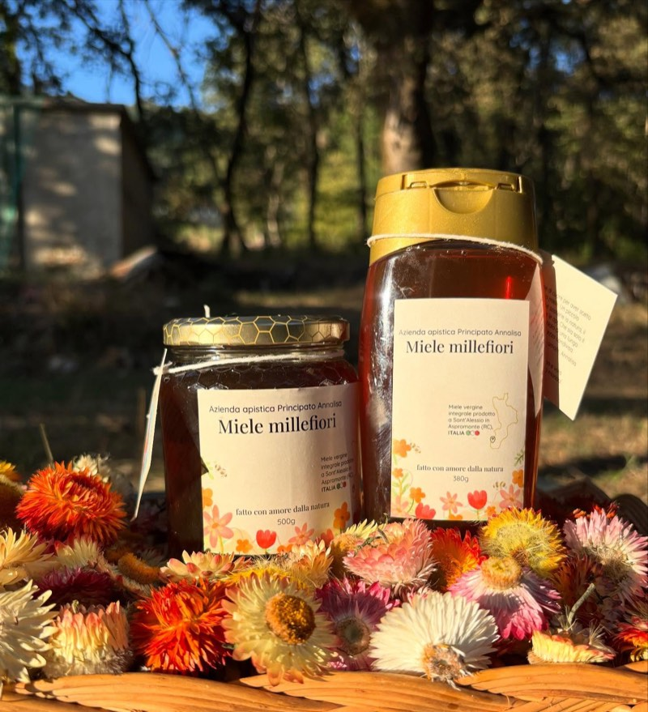
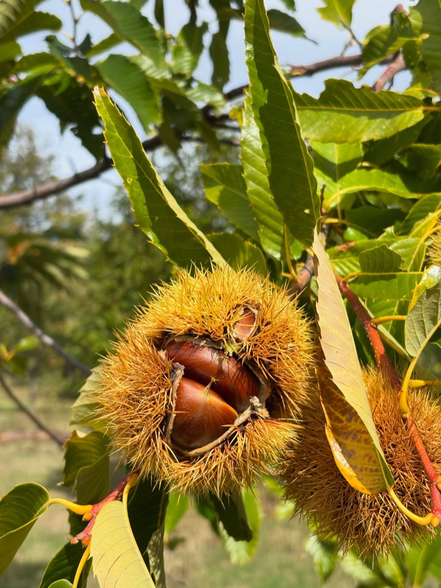
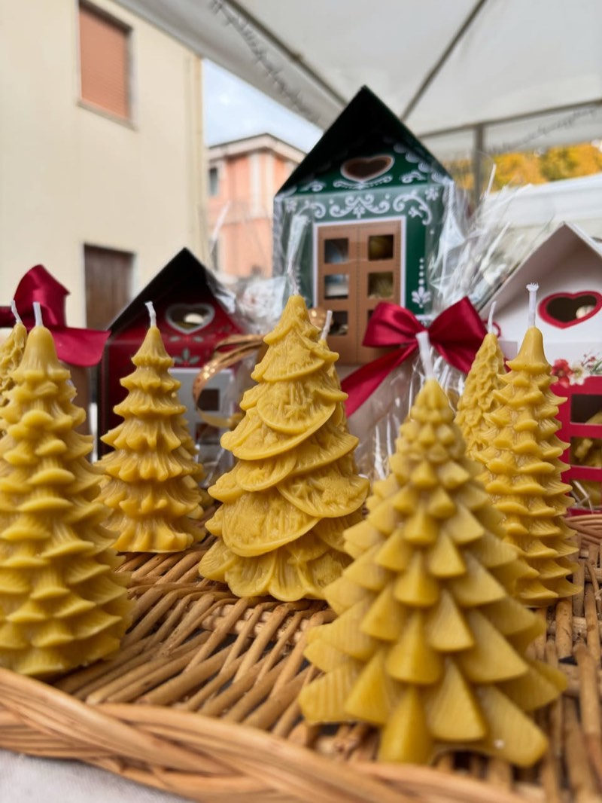
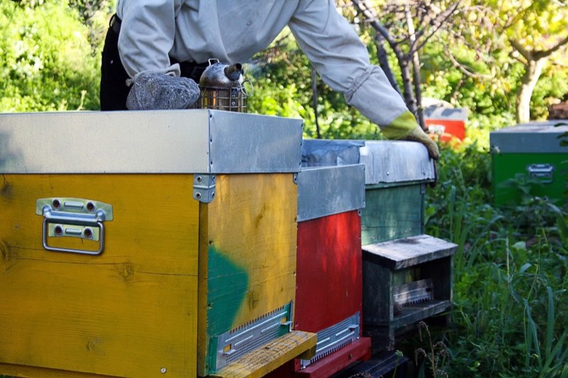
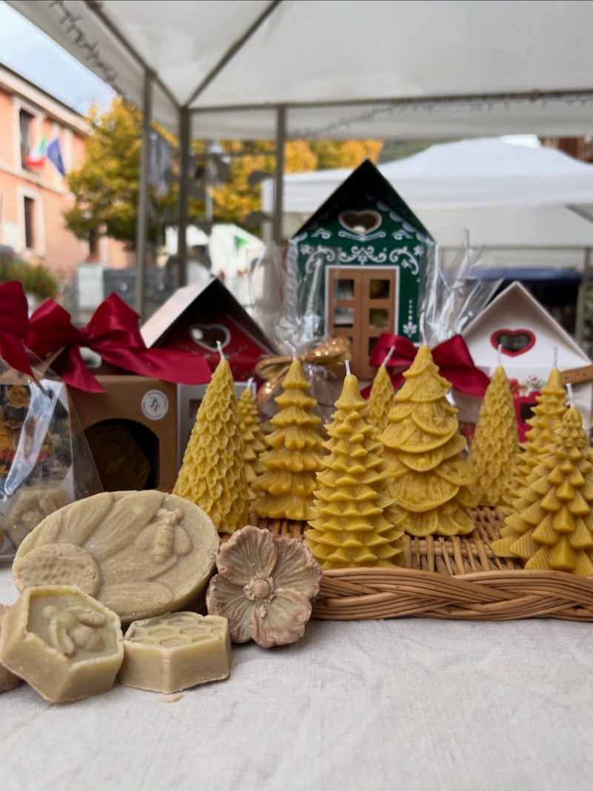
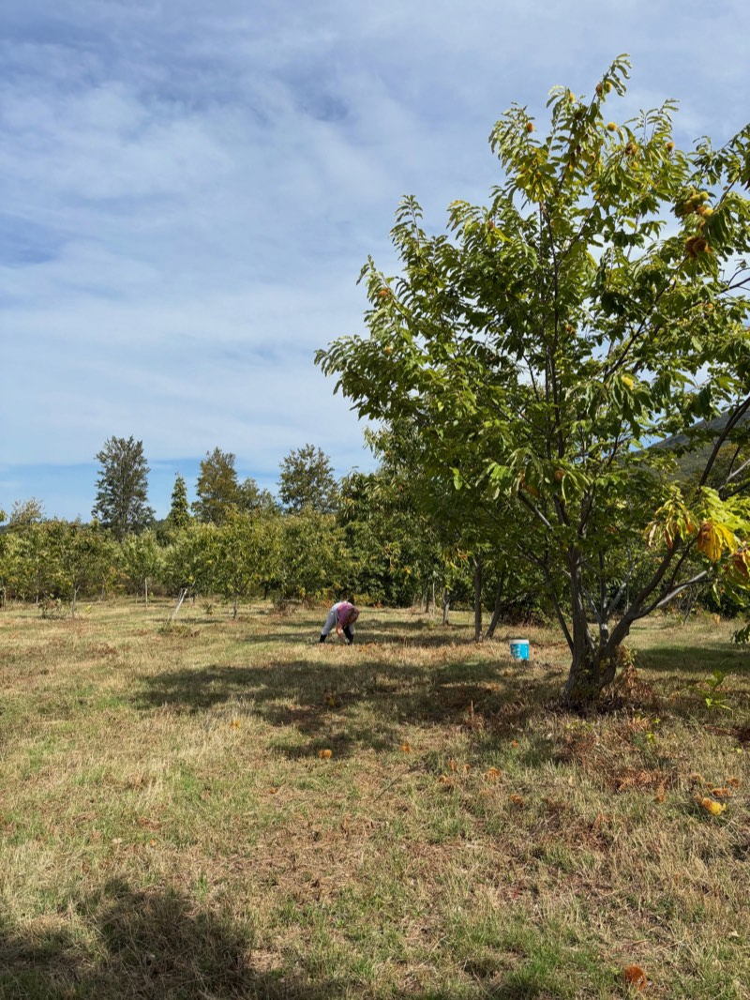
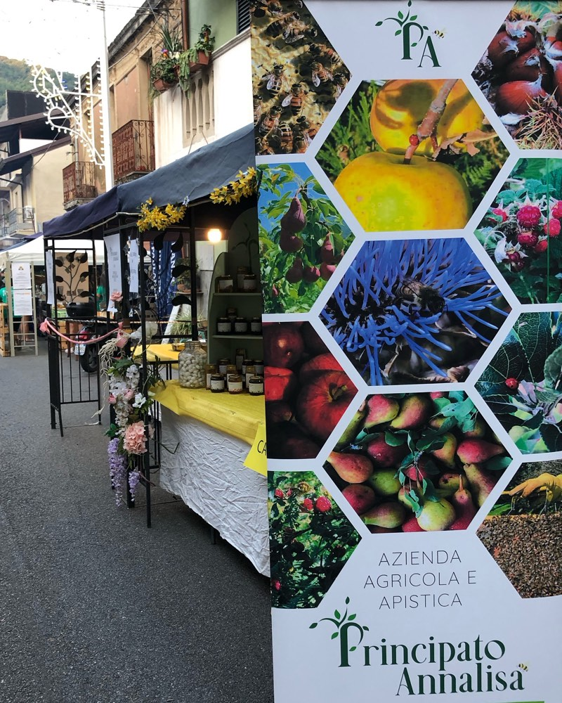

Miele di castagno
Deciso, aromatico e sorprendente, con un retrogusto amarognolo.
In tavola con formaggi stagionati, pane di casa, castagne arrostite.
Anteprima. Bozza del nuovo sito dell’azienda Principato Annalisa, non ancora pubblicata. Il sito in linea oggi è agribilla.it.
Siamo l'azienda agricola e apistica di Annalisa Principato. A Sant'Alessio in Aspromonte produciamo miele di castagno, di bosco e millefiori, candele in pura cera d'api e i frutti del nostro castagneto.
Si ordina con un messaggio: ti rispondiamo noi, con disponibilità e prezzo.






Non tutti i mieli sono dolci allo stesso modo. Il nostro è miele vergine integrale, prodotto a Sant'Alessio in Aspromonte: scegli quello che ti somiglia.
Deciso, aromatico e sorprendente, con un retrogusto amarognolo.
In tavola con formaggi stagionati, pane di casa, castagne arrostite.
Scuro, corposo, inconfondibile: un tesoro dell'Aspromonte.
In tavola con yogurt, ricotta, tisane.
L'anima di tanti fiori diversi, in un'armonia di profumi e colori.
In tavola con colazione, dolci di casa, latte caldo.
La fiamma calda delle candele in pura cera d'api porta in casa una luce diversa e il calore delle cose semplici.
Le modelliamo a mano: abeti, favi, fiori. E quest'anno c'è una novità, il sapone fatto in casa con olio d'oliva e miele.

Ogni persona è diversa, e anche il suo regalo può esserlo: scegli tu come abbinare i nostri prodotti per una confezione cucita su misura.

Due ore tra le arnie, nelle campagne di Sant'Alessio: si osserva da vicino la vita dell'alveare, tra danze, favi e profumi di resina.

L'azienda è nata nel settembre 2015 a Sant'Alessio in Aspromonte e si estende per circa 15 ettari nel comprensorio di Gambarie.

D'estate siamo a «Condito e Saporito», a Sant'Alessio: frittelle e crespelle fritte a vista, e il nostro miele. In autunno portiamo il banco e le api a «Sapori d'Autunno», con il racconto dell'apicoltura tra miele, favi e biodiversità.
Le date le annunciamo sui nostri profili.

A Sant'Alessio in Aspromonte e a Billa, nel cuore dell'Aspromonte, in provincia di Reggio Calabria. L'azienda è nata nel settembre 2015 e si estende per circa 15 ettari nel comprensorio di Gambarie.
Miele di castagno, di bosco e millefiori, candele in pura cera d'api, sapone all'olio d'oliva e miele, castagne, mele e pere di diverse varietà e alcune piante officinali come lavanda, origano, salvia e rosmarino.
Metti nel carrello ciò che ti interessa e manda la richiesta su WhatsApp con un tocco: ti rispondiamo noi con disponibilità e prezzo. In alternativa scrivici in privato su Instagram o Facebook.
I prezzi e le tariffe di spedizione del negozio online sono in preparazione: compariranno qui appena confermati. Per ora te li diciamo noi quando ci scrivi.
Il pagamento online con carta è in preparazione. Quando sarà attivo avverrà su una pagina protetta del servizio di pagamento: noi non vediamo e non conserviamo i dati della carta.
Sì. Scegli tu come abbinare i prodotti: miele, candele in cera d'api e sapone. Prepariamo una confezione su misura e la definiamo insieme con un messaggio.
In autunno. Nel 2026 la raccolta è cominciata a ottobre. Sono raccolte a mano e si prenotano con un messaggio, finché ce ne sono.
Sì, con l'esperienza «Nel regno delle api»: due ore tra le arnie nelle campagne di Sant'Alessio, con una degustazione guidata di miele, polline e propoli. Al termine ogni partecipante riceve una confezione di miele prodotto in azienda.
Sì. In azienda sono venuti famiglie con bambini e un gruppo scout: si osservano le api da vicino, si scopre come funziona l'alveare e si assaggia il miele.
Per un ordine, una confezione regalo o una visita alle api basta un messaggio.